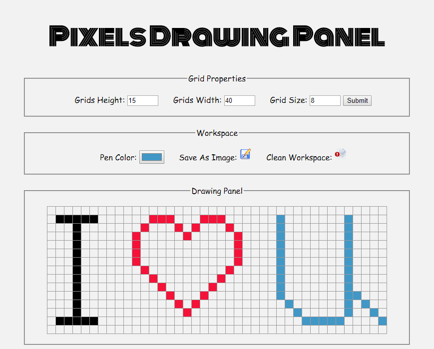
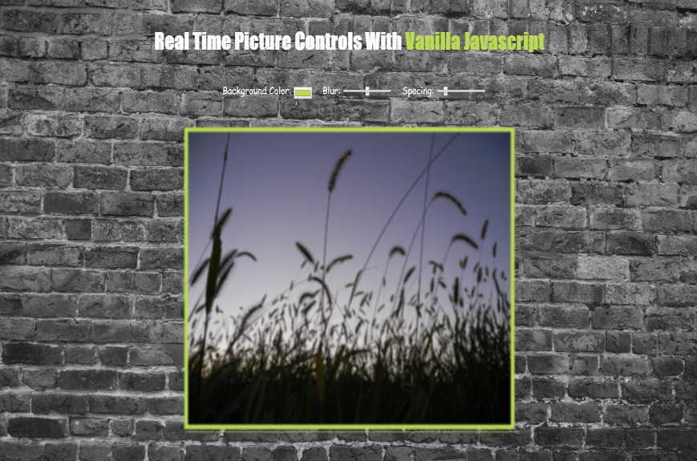
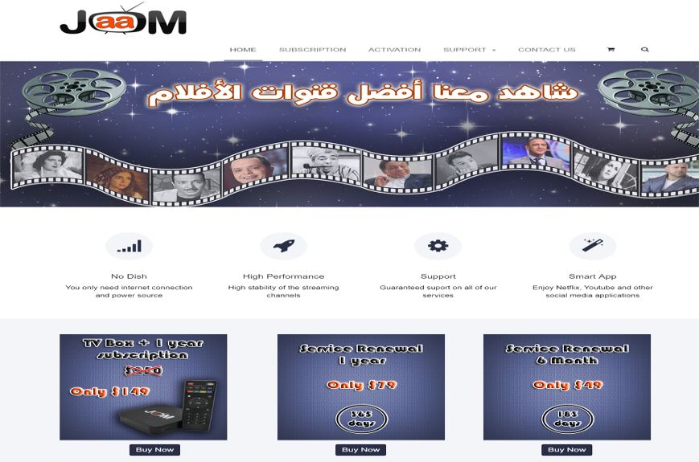

Andrew Fakhry
Pixel Drawing Panel
A pixel drawing panel that you can use to do nice drawings and save them as pictures. You may also change the drawing panel size and use different colors. It was built using HTML, CSS and jQuery.
Piano Player

A piano player website which allows basic music playing for ear training and some basic composing. Use keyboard buttons to play the music scale. It was built using HTML, CSS and vanilla javascript.
Picture Controls
You can control the frame color, frame margin and the picture blur through real time controls adjustments using CSS variables and Javascript. It was built using HTML, vanilla javascript and mainly CSS.
CSS Clock

This website shows analog and digital clocks of the current time. The design is responsive and works on a variety of devices. The clock shape was created using CSS styling. It was built using HTML, CSS and vanilla javascript.
Portfolio

My old portfolio website that shows skills, featured projects and a contact form. The design is fully responsive and was optimized to work on all devices. It was built using Bootstraps, HTML, CSS and PHP.
Jaam TV
Jaam TV is a foreign channels broadcasting company. I completely designed their website and created all the graphics including the logo, banners and slideshows. It also accepts online payments through stripe.
Old Movies

A lot of old movies are so great and, fortunately, some of them are now in the public domain. This website collects these movies in one place. It was built using Bootstraps, HTML, CSS and Django/Python.
Bicolorable Graph

Calculates the possibility of having a BiColorable (bipartite) set of nodes when they are connected through a number of edges through searching for two adjacent nodes with the same color. It was built using C++.
Flee Game

The first software I ever built six years ago. Try to save Horus from the evil octopus and challenge yourself to achieve a new high score. Be careful because the octopus gets mad really fast! It was built using Delphi.